Project 3: Fun with Flow Models
Part A: Exploring the Power of Flow Models
1. Visualizing Training and Sampling
1.1 Constructing Noisy Training Inputs
By interpolating a clean image with Gaussian noise, we are able to construct noisy training inputs. With the equation, x_t = (1-t)e + t*x_1 with e sampled from a Normal distribution, we are able to modify the clean image x_1. From t=0 to t=1, we go from a noisy image to the clean on respectively.
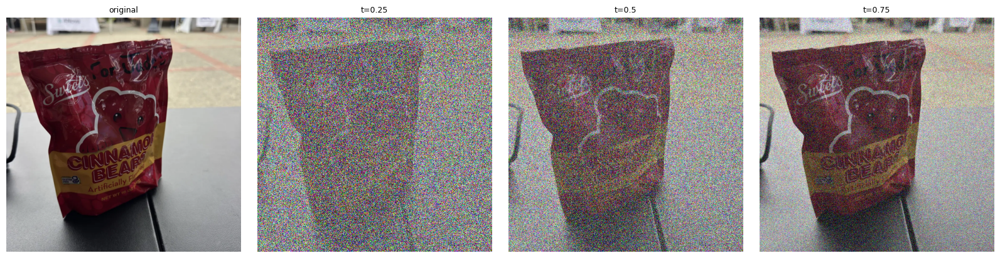
1.2 Classical Denoising
By using a Gaussian blur, we are able to reduce noise since the averaging of nearby pixels cancels independent, zero-mean noise. As you can see, at high levels of noise, there are the results aren't as good because the Gaussian blur also removes high frequency (e.g. edges, outlines) when it is removing noise. The denoiser being unable to distinguish the difference between noise and important details demonstrates one of the biggest pitfalls of classic denoising.
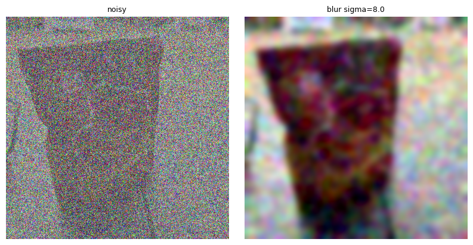
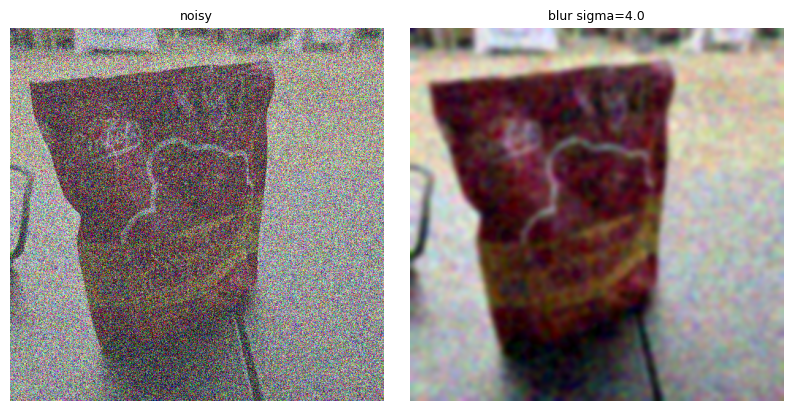
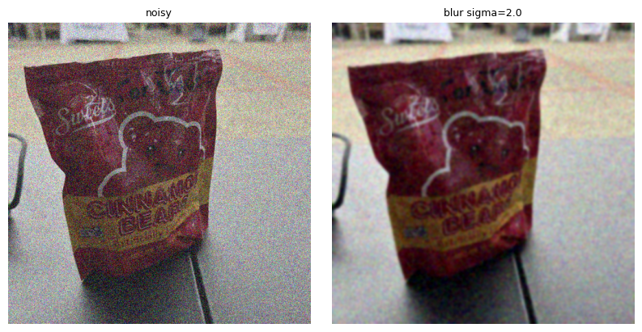
1.3 One-Step Denoising
Using a pretrained flow model, we are able to predict the vector field that would describe how a noise image should step to move towards the clean image. As we take one step in the direction of the vector field, we slowly get a cleaner image that takes the form of whatever our ending clean image is supposed to be. We use the predict_velocity function with a text embedding of "a high quality photo" to compute this vector field. The learned trajectory from the noise to the clean image is not fully linear though, so one step will not fully denoise the image.
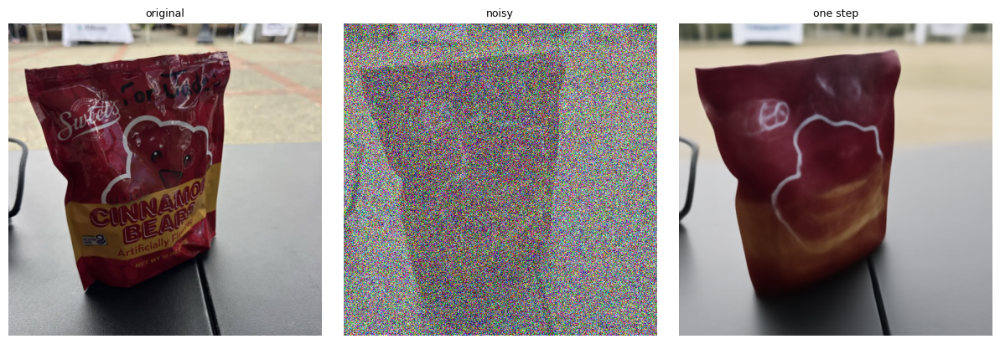
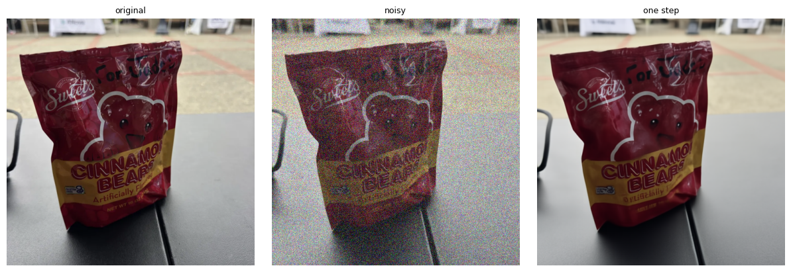
1.4 Visualizing Velocity
Since we are predicting the vector field, there are areas where it is not on the true trajectory across time steps. By comparing the model to our ground truth velocity vector (x_1 - x_0) using root mean square, we are able to see where the model deviates from the target and by how much. The small errors can be amplified in the final reconstruction of the image.
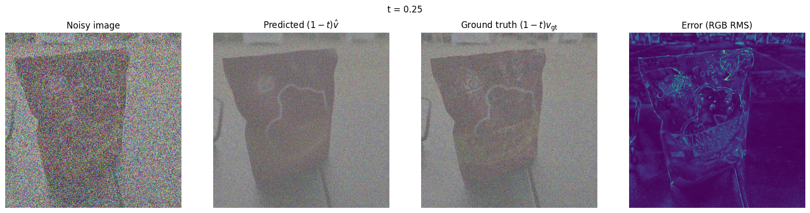
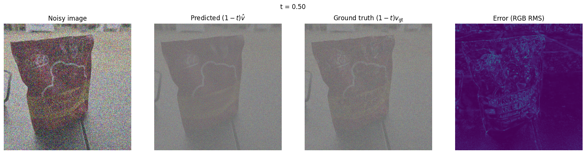
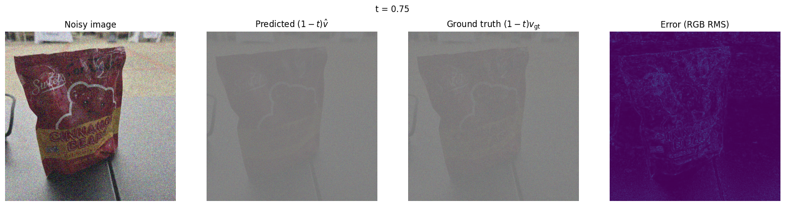
1.5 Iterative Denoising
To increase our accuracy, we take smaller steps each time, reconstructing a more accurate image because learned flow fied trajectories are usually curved. After every increment (25 steps in total), we recompute velocity using the current image and timestamp, and for the last step, we adjust it so it terminates at t=1 exactly. By dynamically editing the sample, we get a more effective denoiser since the learned vector field can be changed throughout the denoising process. Using the intermediate images, we see the image take more and more shape.
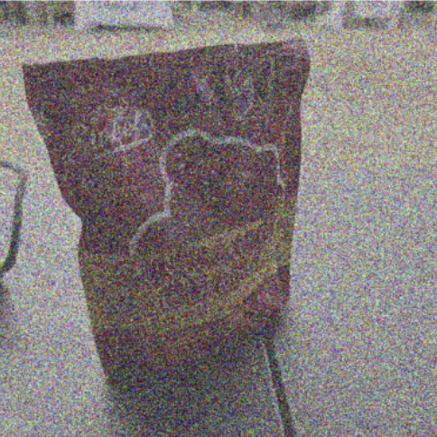
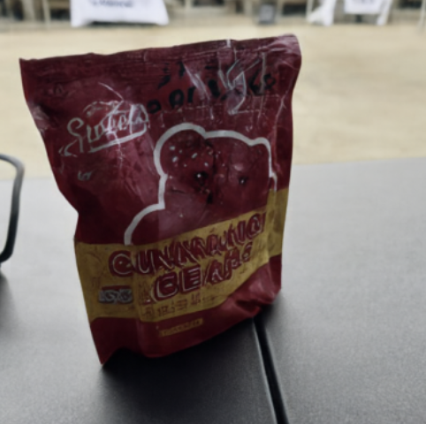
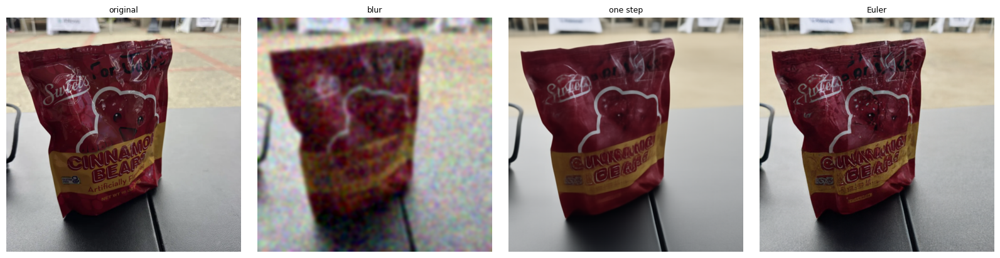
1.6 Generating Images from Noise
When we pass in random noise initially (instead of a cleaned image) and use the condition to guide the flow, we get these images for those select seeds. Different starting seed values create different starting noisy images and different generation trajectory. These flow models can perform unconditional sampling as demonstrated by these images.

2. Conditional Generation and Guidance
2.1 Classifier-Free Guidance
Classifier-free guidance (CFG) will help push trajectories towards a text-conditioned velocity as opposed to just unconditional predictions. When the CFG is ran, a conditional and unconditional velocity is calculated. The conditional velocity represents the text embedding and the unconditional predictions just provides a reference direction if unconstrained by the prompt. sBy setting w, CFG can calculate a weighted direction that will pull the outputs towards the prompt. We set out w to 7. A high w can improve the details of our images (as shown by the comparison between these images and the images from the previous section), but if the w is too high (>10) it can reduce image diversity. We see this sort of happening already with all the humans looking somewhat similar to each other even though they started as different noisy images.

3. Creative Applications
3.1 Text-Guided Image Editing / Image-to-Image
By adding noise to a clean image, we are able to introduce new pixels for the denoiser to use to come up with a new image. Lower t_start values allows for more different outputs and a higher t_start makes it so the original values of the clean image are preserved more. Starting closer to the clean image reduces the diversity of other outputs and retains more structure of the original image.
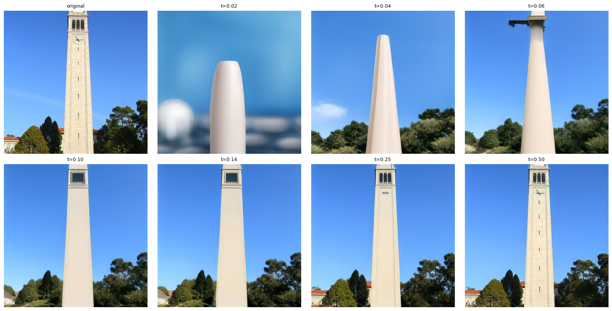
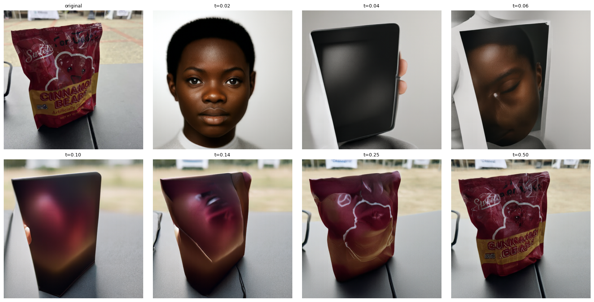
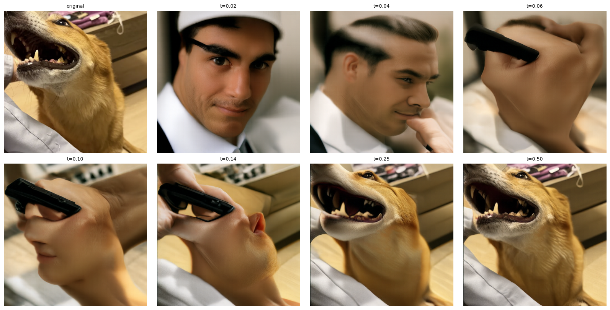
Hand drawn images or non-realistic images provides a wider canvas for the denoiser to use. Here is how it can be done using 1 image from the web and some drawings I created.
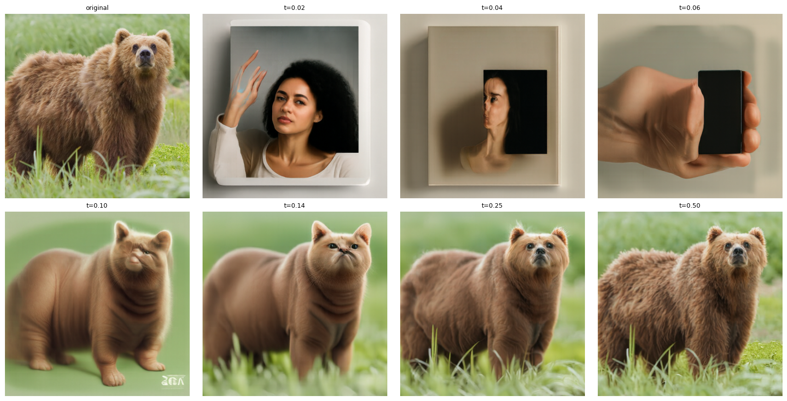
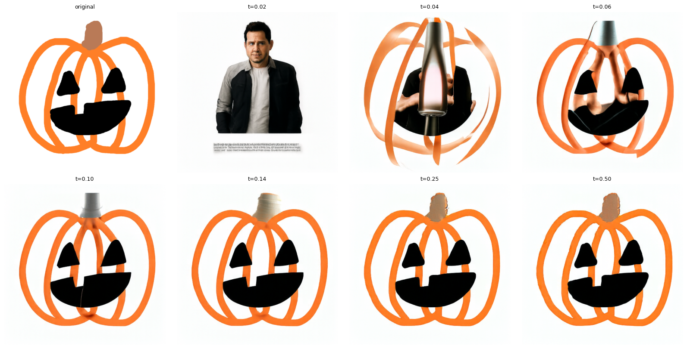
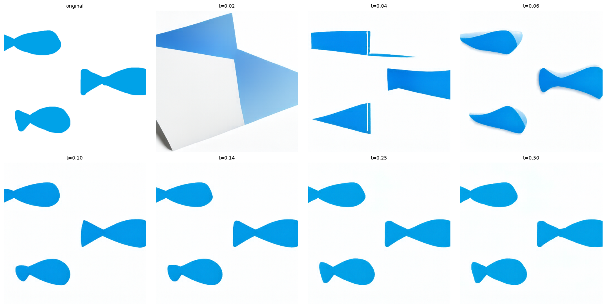
3.2 Text-Guided Image Editing
So far, we have been using the prompt "a high quality photo" but that is pretty vague as a condition. By using different prompts for each image, we are able to transition from our text description back to the clean image. Additionally, changing the t changes the amount of noise introduced which gives the model more or less pixels to work with.
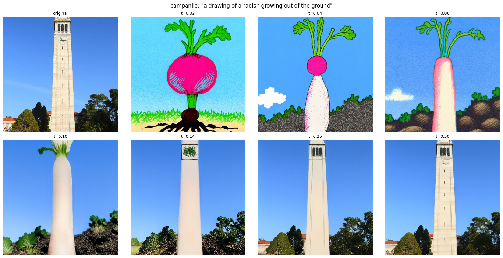
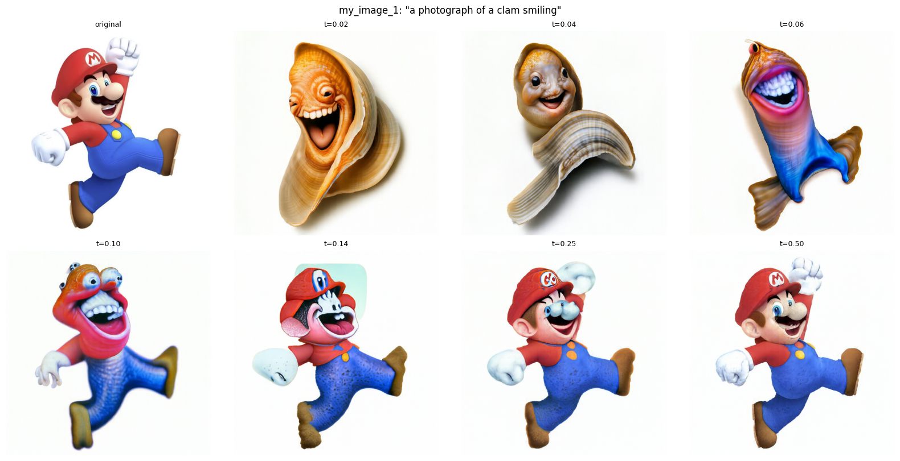
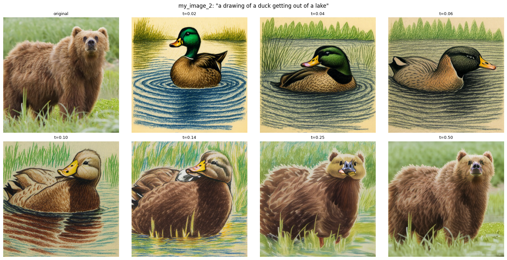
3.3 Visual Anagrams
To create a visual anagram, we can average the CFG velocity predicted for one image and CFG velocity predicted for another image (but slipped 180 degrees). For each euler step, we use this average between these stacked images and when the image converges into a clean image, we can see both. The velocities would try to go in both CFG velocities, balancing the two images to look vaguely like both depending on the orientation.

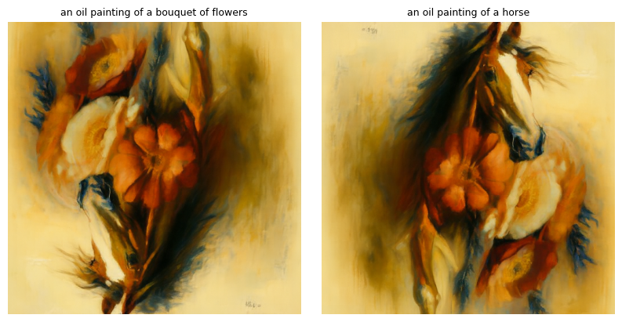
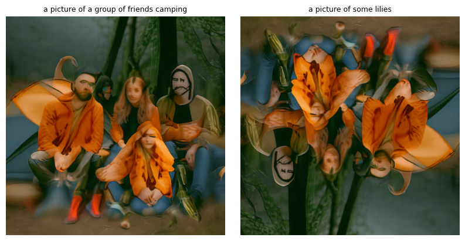
3.4 Hybrid Images
Similar to the hybrid images from project 2, combining the low frequency components of one prompt with the high frequency components of another prompt, we create an image that looks different depending on the viewing distance (for the sake of the website, we have included the smaller versions as a demonstration). We first find the CFG of the two prompts and then use Gaussian blurs to extract high and low frequencies before combining them together.


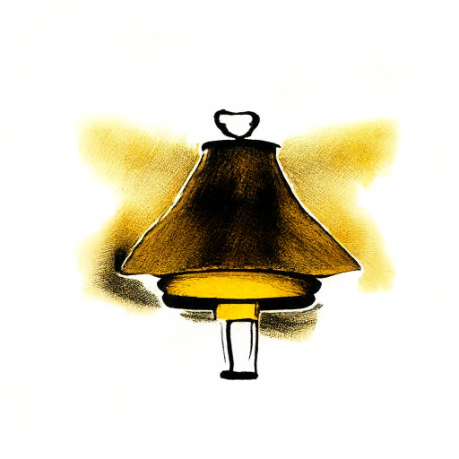
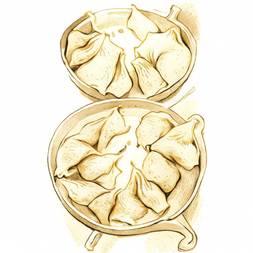
Part B: Flow Matching from Scratch!
Part 1: Training a Single-Step Denoising UNet
1.1 Implementing the UNet, 1.2 Using the UNet to Train a Denoiser
A UNet uses encoders and decoders to denoise and classify images. This is done through skip connections that can balance global context and spatial details. First, we capture the context of the images on a global context by reducing the resolution. The encoder's job is to extract high level features through downsampling. After, we expand it back via upsampling to preserve the tiny details, the job of the decoder. For each digit image, we are able to denoise it and recover the edges that make up each handwritten digit.
1.2 Using the UNet to Train a Single-Step Denoiser
Using L2 loss optimization, we map a noisy image to its clean image counterpart in the MNIST dataset. For every epoch, we generate a fresh noise combination. This will help the model generalize better and avoid overfitting any static artifacts since random noise is added to the images. This is the training data, along with an Adam optimizer, that our denoiser will be following. We have shown the clean/input/prediction after epochs 1 and 5. We have also included the noise levels by rows after this simple training loop. Lastly, we can see how the training loss gets less and less each epoch, as the model learns more.
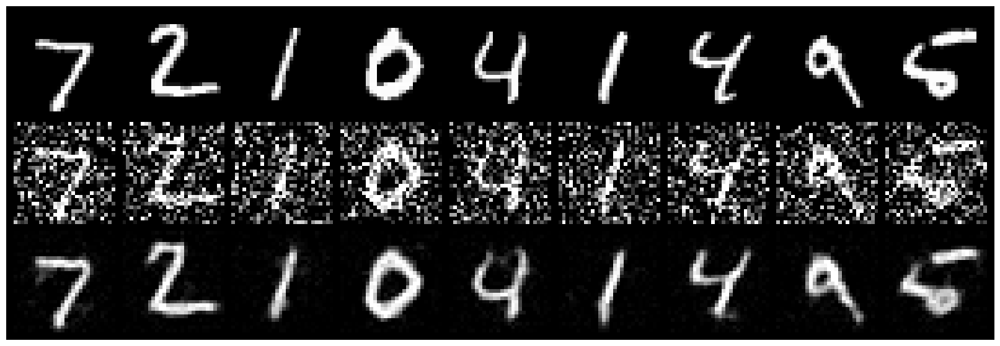
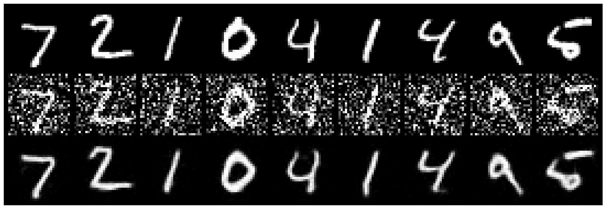
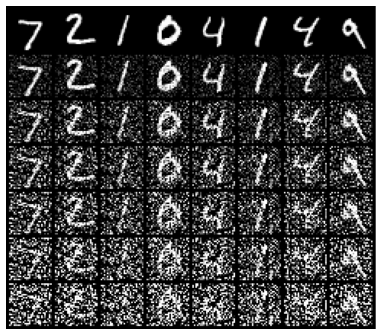

What happens if we use a single-step denoiser (the one we just trained) on noise levels and parameters that are out of distribution. This allows us to better evaluate how degradation levels outside a model's training can be handled. As you can see, when it gets to the extremely noisy images, the resulting images are not as clear since the model is trying to reconstruct from an input without reliable information. If the noisy images are more similar to those that the model are trained on, it will be easier for the model to denoise properly.
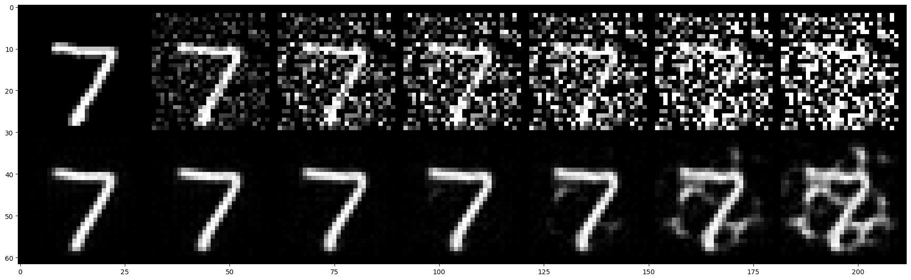
When we try to train a model to denoise pure noise, we can see how the outputs seem to be blurry and does not take the forms of any specific digit. And even after 5 epochs, there is very little change between the outputs. Since we use MSE as our loss function, it tries to minimize the distance from all the training examples. This results in an average of all the images, which causes more pixels in the center (since most handwritten digits will cross the center pixels) to be brighter. Since each input doesn't have a lot of useable information, we end up with this blurry average instead.
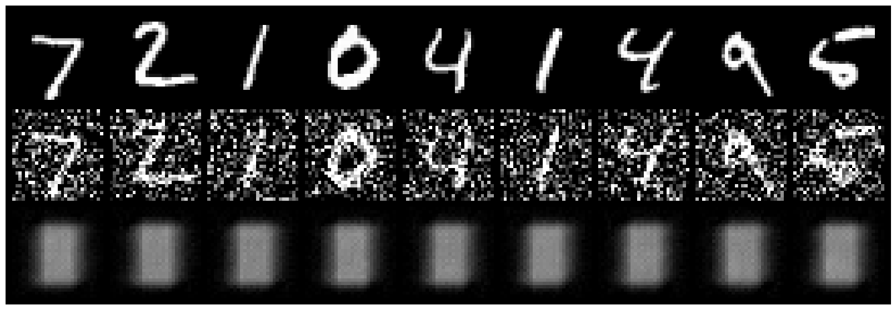
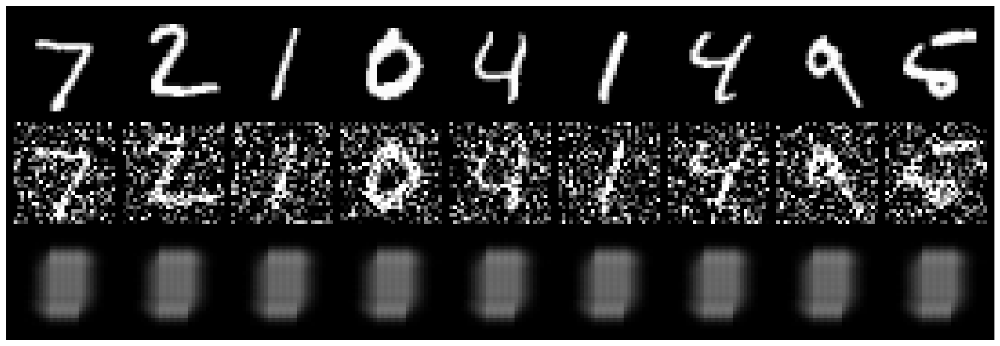
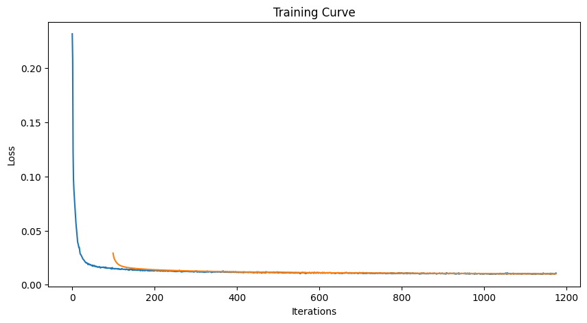
Part 2: Flow Matching Training and Sampling
2.1 Time-Conditioned UNet
Using FCBlock (fully connected block), we are able to be more dynamic during the intermediate stages of our analysis and better predict how the image changes across multiple points as opposed to just one linear trajectory. The FCBlock makes the internal feature map more individualized and scaling each one independently; the timestep embedding is transformed into scaling and shifting signals, which help find the appropriate direction of movement. Instead of just one direct mapping, this model has a vector field that is time dependent and help guide the sample throughout the entire generation process.
2.2 Training the Flow Matching Model, 2.3 Sampling from the UNet
Now we will implement an exponential learning rate scheduler. By predicting the velocity across a linear interpolation path between the Gaussian noise (x_0) and our clean image (x_1), our optimization target is much smoother than if we just try to predict different jumps. We can optimize this prediction using regression loss and an exponential learning rate scheduler to slowly reduce the learning rate during training. Similarly to the other parts, we repeatly apply the predicted velocity to move from pur noise to a digit. This contrasts our previous implementation with MSE loss where pure noise couldn't be reconstructed to an image since one jump was not enough and it needed small iterative steps.
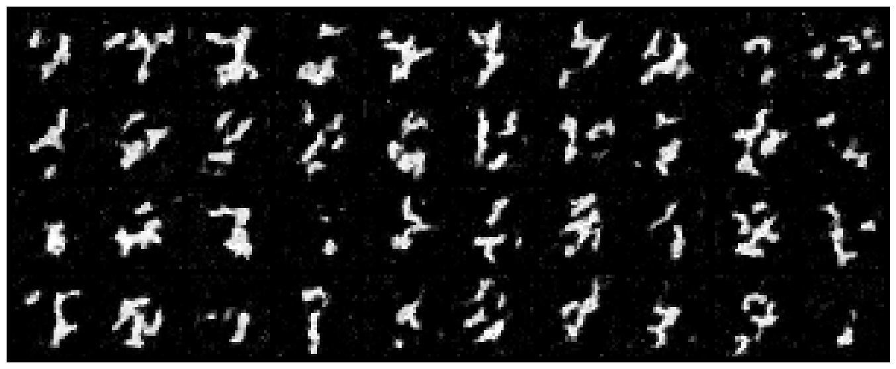
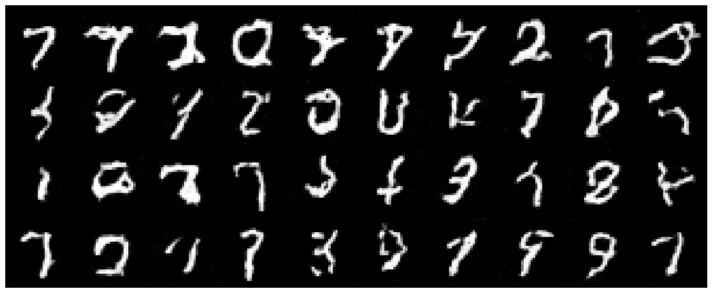
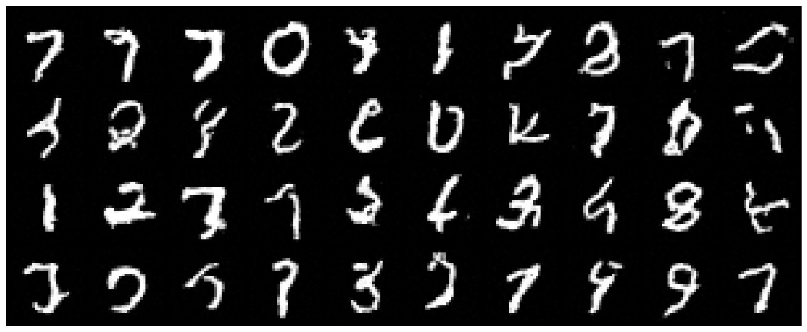
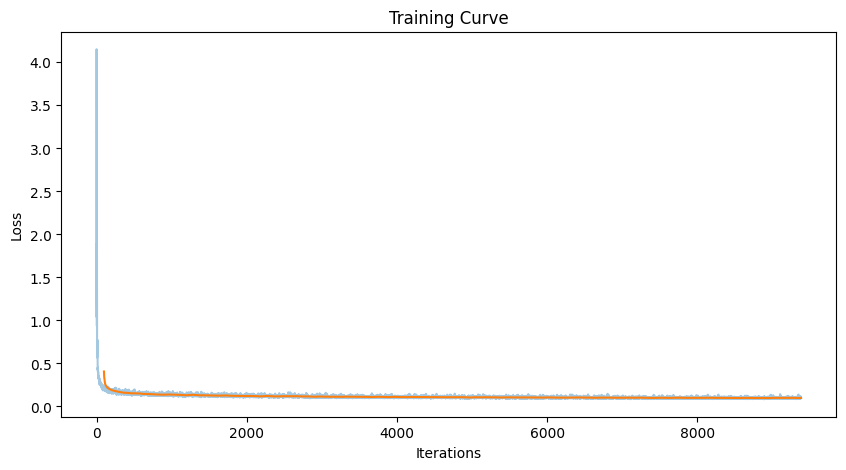
2.4-2.6 Adding Class-Conditioning to UNet then Training and Sampling,
Now we extend our implementation. We add one-hot class labels and a 10% dropout mechanism; the one-hot class label creates a distinct categorical indicator and the dropout mechanism helps the model learn conditioned and unconditioned velocity predictions. The block now has class information with time data that gives the model more information about the digit they are generating. While training the model, it will learn images that correspond with the label is provided (conditional) and learn predicted velocities for the times it is set to 0 (unconditional). This makes it so the model is able to generate with or without guidance during sampling. At run time, we see how conditioning adds controls over the image's output, and we can better direct generation in general.
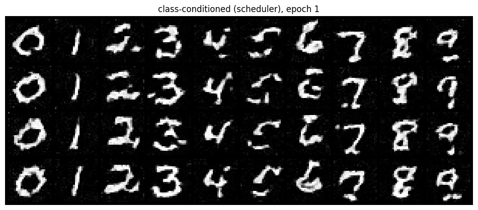
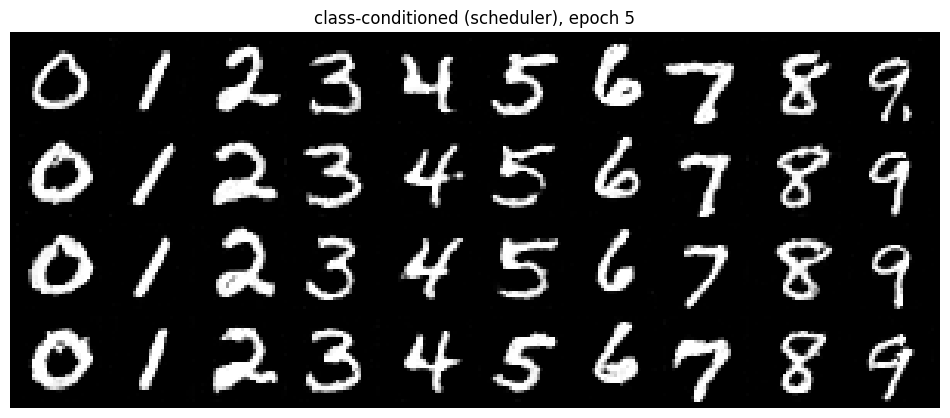
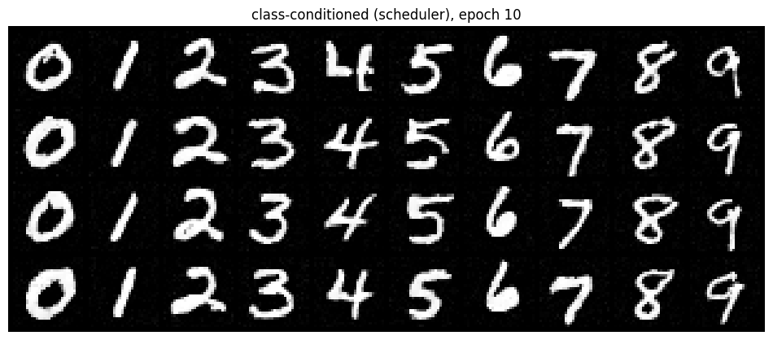
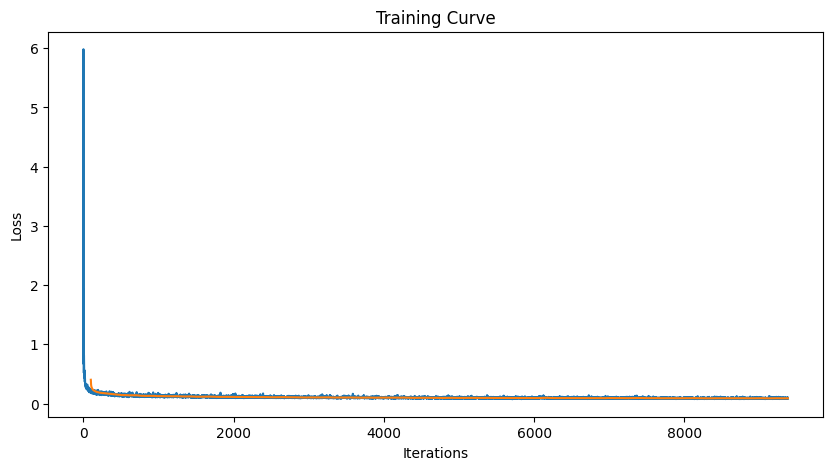
Without the learning rate scheduler
What happens if we don't step through the scheduler? The results looks quite similar as the one in the scheduler. By being trained on conditional and unconditional data, the model is able to tune their hyperparameters to compensate for the missing scheduler.
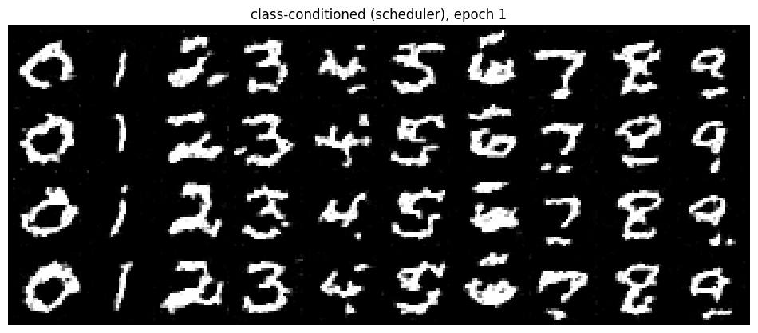
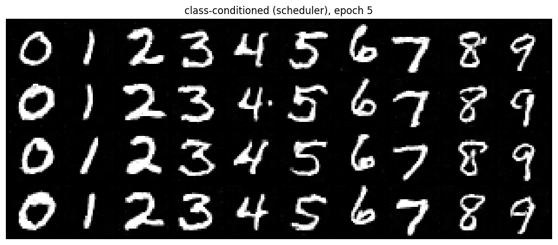
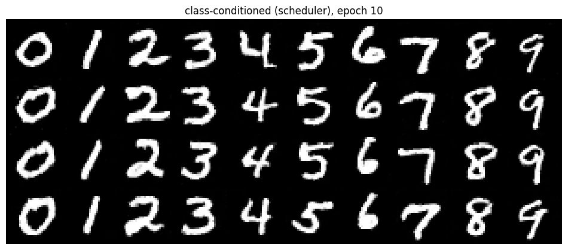
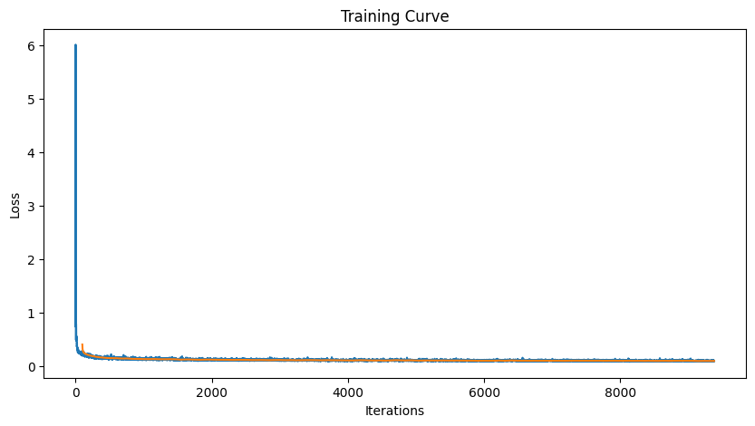